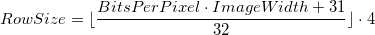
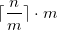
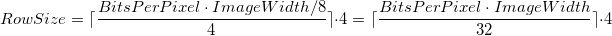
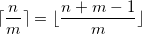

Behind Padding: Floor and Ceiling Functions
Knock, knock, question ahead!
Let's first check out a little hack below to introduce our main focus of this post. In BMP image file processing, each row's size of the pixel storage shoud be rounded up to a multiple of 4 bytes by padding, and the following method is presented (you could also read the related section on Wikipedia):

(The special parentheses indicate a floor function.)
For instance, a 250*200-sized 8-bit image must have 252 bytes in each row,
which could be calculated by the following equivalent Python code:
width = 250 bit_count = 8 # Operator `//` could do the round down row_size = (width * bit_count + 31) // 32 * 4 # the result is `252`
So here is our topic (which you might guess it without effort...):
31&32? Floor function? And how did we get that formula?
Let's keep it up and deal with it!
How do we solve some rounding, in general?
First of all, everything we need in the very beginning is to answer a simple and specific question:
Given an integer
5, how to find its next nearest integer that is a multiple of4, where8is the result?
The solution could be separated into several steps as follows:
- Let
5be divided by4, and we get1.25 - Round up
1.25, and that's2 2times4, and here is the8!
But here we could make it more formal than my simple English, by introducing
ceiling function, which rounds up a number to the smallest integer that is not
less than the previous one (e.g. ceil(1.25) returns 2 as mentioned above).
A ceiling function could be represented as ceil(y) or ⌈y⌉. So
our solution comes more gracefully:

(m and n are 4 and 5 respectively here.)
Next, we could go further and make all these problem-specific.
Get to know what to do
Recalling the question above, we're gonna count the bytes in each row of the
pixel array, which could be solved straightly by making the product of image
width and bits per pixel divided by 8 bits, right?
But the result might contain fractional parts, and we are supposed to round it
up to a multiple of 4. So now let's make it a whole like the n above and we
can get the certainly correct answer here:

Kinda childish maths thing...
Problem solved, and where shall we go now?
The above formula can exactly solve the padding question, but we can basically better the solution by making it practical and digging deeper.
But how and...why?
Taking the ceiling is not that practical in computer programming, for usually
many implementations and standards prefer taking the floor, or we can say, the
floor function could be found in some effective and built-in arithmetic
operators, not in some cool modules from standard or third-party libraries. Yes,
I mean the division operator, for example, generally has the nature of taking
the floor in calculation (e.g. in Python 2 it is /, but in Python 3 it should
be //, to round down the quotient). So our new question is clear: How to
convert the ceiling function into a floor one?
Avoid figuring it out through a top-down approach, we can come straight to the point by searching for some properties of floor and ceiling functions. On the Wikipedia page you can notice that there is a property about quotient and conversion, and it looks like:

Put the variables above into this formula, and we now have our final answer to the question!
Well done, only JFGI things!
But Google-oriented programming might be more boring than digging in some maths stuff. Maths seem not kinda like the abstractions or interfaces that perform black-box manipulations, at least there is no such information hiding techniques for somewhat an encapsulation, IMO.
So, wanna prove it?
I don't mean to present a solid proof for the property, but there is a vivid one that probably could satisfy your curiosity, inspired by this answer.
Let's imagine...
- There is an interval
[a, b]whereaandbmight have fractional parts, and ⌈a⌉ isn, ⌊b⌋ isn + m - 1, so you can calculate that betweenaandbthere aren + m - 1 - n + 1 = mintegers - Next we use
mto divide bothaandb, making the interval shrinkmtimes - How many integers are there between
[a/m, b/m]now? Onlym / m = 1unique integer! And ⌈a/m⌉ and ⌊b/m⌋ are now equal to the number, so the formula will look like the original one
Q.E.D.
(Notice that this is just a conceptual proof. This problem is actually exercise 3.12 in Concrete Mathematics, where the proof is more definite.)
Wrap up
There will be some scenerios that we could optimize or improve our works in some unexpected ways, like this time I need to introduce some algebra for some hints of practical enhancements. Anyway, this post is NBD, and rather my minimal review of using mathematical approaches to solve problems. Then, keep calm and bring on the mathsaber?